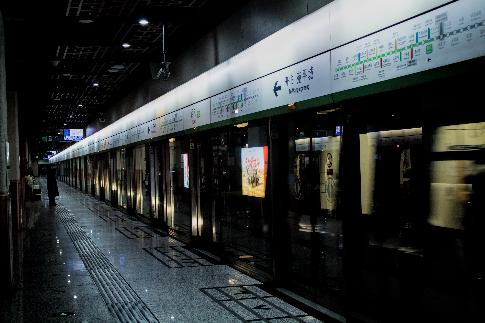

In my journey to use a flip phone in China, here is a selected entry of my journal:
Friday, 17th of April
The place I usually go to for lunch has closed for renovation, so I’ve been going to the restaurant next-over. I came in yesterday and despite some friction I was able to order, but today I was told they no longer have menus — allegedly they are changing it, so they won’t have one for a few months. How strange that they didn’t receive the new one before getting rid of the old one. Would it be cynical to assume they are testing if they can get every customer to order through their phones so they can implement dynamic pricing and collect more data? Anyway! I had gone to McDonald’s before too and I wasn’t able to pay. As I look around at everyone on their smartphones (including a couple sitting alone together) I realize the absurdity of it all.
After sitting here for a while, and profusely apologizing for not having a smartphone, an older couple walked in and, with all the normality in the world, said they did not want to use a phone, ordered by talking to the staff, and paid in cash. Why do I feel like I am such an inconvenience when, to staff, this happens multiple times a day? And why have small interactions which would have been considered normal 10 years ago become ‘inconveniences’? I think it was good for me to see this scene — I had been so worked up! Nonetheless, I may need to find a new place to have lunch for the next few months.

I never thought living in a city would be so lonely.
Should I just bring my smartphone with me at lunch? In the past, willpower alone hasn’t done it. Besides, if I do, however will I get to know the people around me? That lightness of the heart when I see a familiar smile, that giggle when I can’t express myself and my hands do the talking, looking into someone’s eyes and the universe looking right back at me; this is the theft committed for the sake of profit and in the name of ‘convenience’. Just how unbearable does reality have to be for us to continuously get stuck in the same fly trap? Humanity isn’t so much in a search for meaning as it is in exile by a lack of it. Smartphones present the greatest escape from the absurdity which makes us human. All our fears — rejection, intimacy, mortality — fade into obscurity like a starry sky next to a billboard in Times Square. Because if you have lunch with the one you love, it is a matter of minutes before that nagging question strikes the back of your mind again: “can you promise me tomorrow?” and if you look closely, sure enough, you can see them aging right in front your eyes. Phones do not make us feel happy, nor do they make us feel sad, they just make us feel “less.” How pitiable, these clever, clever monkeys, pleasuring themselves into numbness with each stroke of their thumb.
“Nothing is worth anything except through it.”